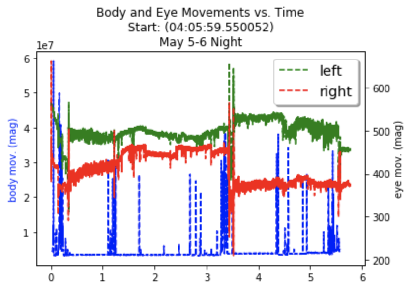
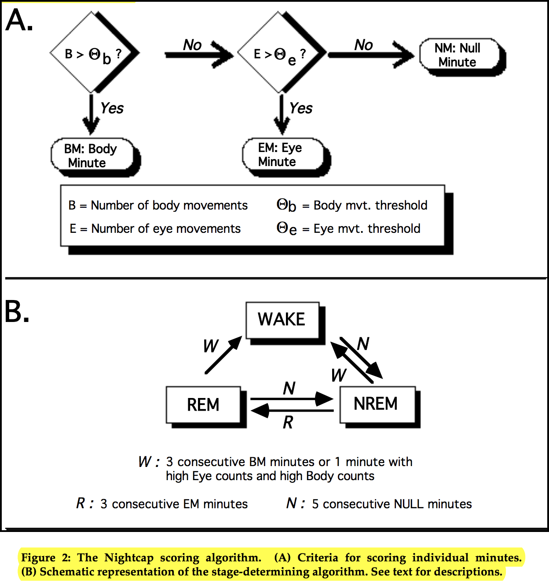

Sleep Stage Detection
MAS.600 (Human 2.0) Final Project
Human 2.0 is a class taught by Professor Hugh Herr in the MIT Media Lab. The goal of the class is to teach students about human augmentation devices and the potential for future (and current) related technologies. A large part of the class focus is to create a project with potential to augment and better understand the human body. Here I present my work done for my team's project--a cheap setup for detecting sleep stages. My team draws inspiration from Professor Robert Stickgold at Harvard and his Nightcap device for realtime sleep stage detection with cheap sensors. This replaces the need for expensive and intrusive polysomnograph studies.
In this writeup, I'll outline the work that I did on this project. I was most interested in creating a very cheap setup to detect sleep stages with low-cost equipment. Using a webcam and variable resistance fabric on a sleep mask, I believe I have everything in place to do just this.
My teammates (graduate students in Fluid Iterfaces and Conformable Decoders) created the mask shown below, which is stretchy variable resistance sensor fabric sewn with conductive thread onto a sleep mask. It's impressive for its simplicity. The resistance changes based on movement where the eyes rest.

I connected these wires to a voltage divider circuit and Arduino. This allowed me to pick up on minute vibrations of the eye. To create good values, it's important to construct the voltage divider circuit with a resistor of about the same resistance as the fabric without disturbance. When not moving, the analog reading should be about half of the microcontroller operating voltage. This equation describes the output of the voltage divider. See this link for more information about the topic.
$V_{input} = V_{plus}\frac{R_{passive}}{R_{passive} + R_{fabric}}$
Eye movements are a good indication of sleep stages, so this presents a very cheap way to read signals from the body. Furthermore, this is much more comfortable than using EEG sensors (another common technique to detect sleep stages). Here is the circuit that reads the voltages on two analog inputs of the Arduino (the Arduino Nano is shown in this image for its small form factor).

Obviously the setup in these images does not look very comfortable to sleep with, but that's only because this is the prototype to prove potential for the design. Using the rig shown above (which included scotch tape, super glue, etc. because I was working out of my dorm room supplies), I conducted a few experiments to collect data. Here are two graphs depicting eye movements of the left and right eye respectively.


Although the graphs lack detail, the x axis is time in hours. The graphs start at the time that I began trying to sleep. The y axis is the 10 bit analog reading (0 to 1031) of the Arduino for the particular sensor. Notice that because the reistors were chosen to be equal to the fabric passive resistance, the values hover around 500, the midpoint of the analog values. Also, I actually used an Arduino Uno for this experiment.
This data is as I had hoped. The key takeaway is that the thick regions correspond to the rapid eye movement (REM) stage. The large fluctuation was clearly detected by the resistive sensor pressed against my eye. The large spike around 3.5 hours is when I woke up and went the restroom, so that explains the large noise. This data is with no post-processing and purely the log. Data was recorded at 10 HZ with my software described in a later section.
Furthermore, the fluctuation steady rate of center value is likely due to the fabric bending over time, but staying in the same position as I slept. This explains the reason to interpret the thickness (rapid movement) than intensity of movement.
The conjecture that the thick regions (in the graph) correspond to REM sleep may be hard to grasp. For this reason, I also conducted the experiment with body movement data. To keep up the theme of low-cost, I used a standard webcam facing my bed for this task. Here is an image from the webcam mounted on my dresser, capturing my full bed (and body).

Instead of tracking body movement with an IMU, I realized that webcam data would be much more precise. I could simply take an image every few seconds and compare the side-by-side frames to get a measure of movement! Super simple and robust to sensor noise! (The only downside was having the sleep with the lights on, but fortunately I also had the mask on.)
I wrote a python script to take an image every 10 seconds while I slept. This saved a lot of photos on my computer. Using numpy is python, I computed the sum over each pixel-wise difference in the grayscale images. This resulted in a very good metric for image comparison. If I moved while sleeping, there would be a spike in magnitude. Here is a graph depicting these image difference values over time with the eye sensor readings over time.

I haven't had enough time to perfect the state machine (due to a lack of experiments and sensor design), but I've written a code base that has everything in place. The code is located here on my Github account. I will explain this and its potential in a later section. Here I'll talk about the plan for sleep stage detection.
Sleep stages have unique characteristics, which can typically be observed from sensors monitoring certain behavior. Prior work from Professor Stickgold suggests that sleep stages can be deduced from body movements and eye movements. Here is an FSM diagram from one of his papers.

This diagram is explaining his state machine for sleep stages. In particular, he is discretizing the sleep cycle into 3 distinct stages--wake, REM (rapid eye movement), and NREM (non-rapid eye movement). Part A. shows that each minute is classified as a body minute, eye minute, or null minute. The setup for his system could be done with signal thresholds, so if the sensors reached values above a set threshold, the minute would be classified accordingly. The second state machine (Part B) shows the transitions between stage of sleep. It takes a certain number of body minutes, eye minutes, or null minutes to make a transition.
Given that this state machine diagram makes intuitive sense (and had great results), I decided to implement this for current sensors. I'll be open-sourcing this code base with documentation explaining the replication. I'm currently collection sensor data over Serial and storing it in a buffer. With signal processing, I'll mark the minute classification (at each minute). This will then be fused with the sleep stage state machine code to indicate the transition.
This is the where the code is:
https://github.com/ethanweber/sleep_stage_detection
In this section, I will better explain the codebase used the project. The code is able to take in multiple sensors via Serial communication. The sensor information coming in is specified in the JSON parameters file. This is what the file currently looks like.
It can handle an arbitrary number of sensors as long as the Serial side of the Arduino is publishing the correct names of sensors (in the correct format). This is described more in the Github repo, but the point is that it should be able to handle multiple sensors and is not hardcoded.
The FSM parts of my code have not been tested yet, but they are mostly in place. It's a matter of finding the best signal preprocessing algorithms to use first, so to prepare for this I made the codebase perfect for collecting data! With the convenient JSON file and Serial data coming in, a CSV log will be created with accurate time and sensors readings every time main.py is run.
The computer vision work, described early, is also baked in the Github repo. It's a python script that saves images, named by timestamp, to a specified folder. This leads to a vey clean collection of data for both an arbitrary number of sensors coming from a microcontroller over Serial and images over a webcam (using opencv).
With a few more experiments, I should be able to find the correct thresholds and signal processing algorithms to process the signal intervals needed to create an accurate FSM of sleep stages. This is the home run considering how cost-effective and simple our system will be. It would be the modern version of Stickgold's Nightcap, and I think everyone would benefit from this effort.
The code has been created with abstraction necessary to achieve such state-machine like behavior. See this main.py file for more information.
Although this article describes only the means to collect high quality data (with timestamps), the code is ready to do realtime sleep stage classification after some initial work to understand the signals coming in. This will open up a lot of doors--including our understanding of dreams.
There have been studies showing that dreams can be augmented in the REM sleep stage, which is described in detail in the paper linked at the top.
Code and documentation will be updated as I continue this project with my team! I'll soon be integrating my work with the amazing work done by teammates (described in the paper linked above). The goal is to get a cheap sensor sleep mask to the majority of people, help improve sleep through analysis, and provide sleep augmentation benefits where possible.